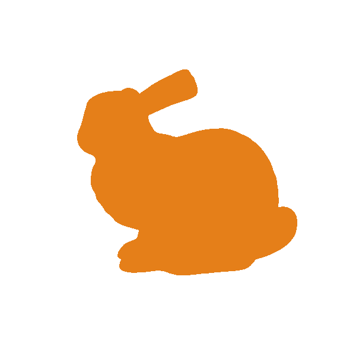
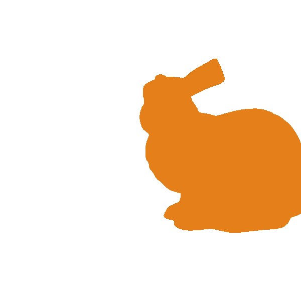
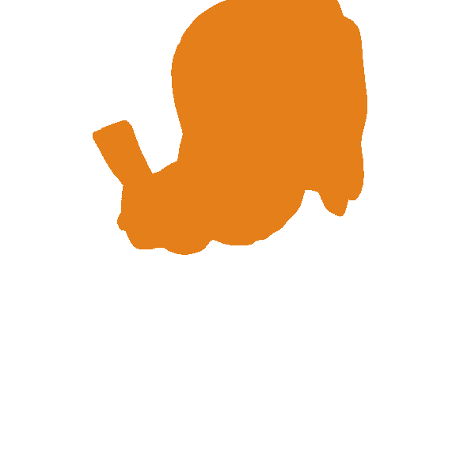
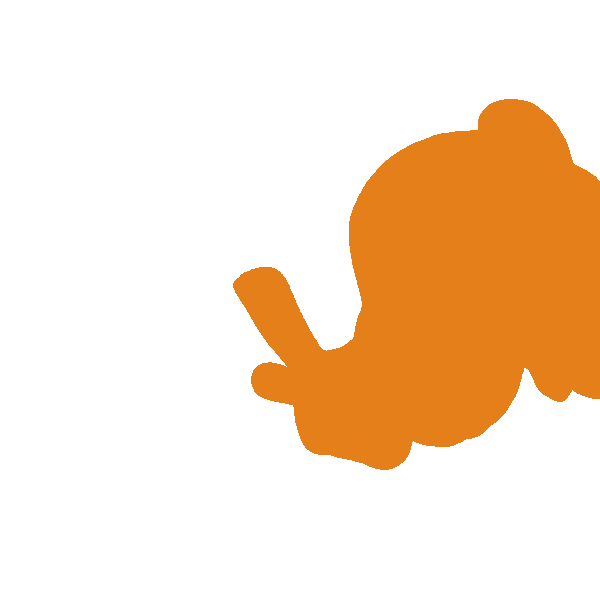
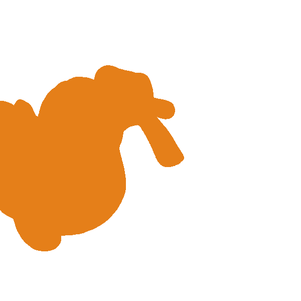

|
Tucano
1.0
A library for rapid prototyping with modern OpenGL and GLSL
|
|
Tucano
1.0
A library for rapid prototyping with modern OpenGL and GLSL
|
For these first exercises you will be working only with the widget class and the transformation matrices. If you haven't done so far, read the Eigen Primer.
First, some words on how transformations are handled within Tucano.
Models are 3D triangular meshes. Apart from the geometry, the mesh also contains information about its location and orientation in the 3D virtual world. These transformation are stored in the so called ModelMatrix. In Tucano there is one extra matrix for the meshes, called the ShapeMatrix.
For the exercises, you will be working only with the Model matrix. Its type is an Eigen::Affine3f matrix.
To retrieve a copy of the Model matrix of a mesh:
Then you can do any type of operation, such as translating it:
When you are done with your transformations, write back the final matrix to the mesh:
Note: due to some design options, Tucano does not return the matrix by reference, you are getting a copy of the matrix. That is why you have to set the model matrix when you finish your transformations. There is an alternative way, however, which is to retrieve a pointer to the matrix. In this way you can perform the transformation in a single line as shown below. But this is optional, if you are not comfortable with pointers ignore this and use the set and get methods:
The camera matrix defines your point of view, from where you are looking at your scene. The Camera class contains a View matrix that defines the camera orientation and location, and a Projection matrix that defines the internal parameters of your camera. Here we will use only the View matrix, and it works very similarly as the Model matrix of the mesh. The get/set methods are:
Note: again, the alternative way using pointers may be used, for example:
This is actually all you have to know to complete the transformation exercises. For exercises 1-5, when you run the program after completing the code inside each exercise a screenshot of your solution will be saved as aPPM files in your directory. If any exercise is left blank, then you will see the image of the bunny without any transformations applied (in its original position). You will also find a exercise0.ppm showing the Bunny in its initial position as shown below:
Bunny in original location and orientation
Note: the bunny looks very flat for now, we are just coloring every triangle with the same color. But don't worry! We will get more impressive results after the Shading lecture and assignment!
In Exercise 6 your method will be called for every frame, so your model should appear rotating on the screen once you complete the method. Screenshots are not saved for this exercise.
The transformations of the exercises are not accumulative. That is, each one will produce a result ignoring the transformations of the other exercises.
There are some questions after the solutions below. Make sure you do not only get the correct result, but you can answer them!
Note: apart from the images below, in the folder solutions you will also find same images with the correct answers for the exercises so you can compare with your solutions. For exercise 6 there is a small video showing the correct result.
Using the set/get methods of the Model matrix of the mesh, rotate it by 90 degrees around the Z axis.
Note: if you want, use the pointer based method, but remember, this is optional!
Solution exercise 1
Translate the Bunny by 0.5 unit along the X axis.
Solution exercise 2
First translate the model by 0.5 unit along the x axis., then rotate the model by 90 degrees.
Solution exercise 3
Note: does the order of the operations in your code make sense to you?
Repeat exercise 3 switching the order. First rotate and then translate.
Solution exercise 4
Note: Do you see the difference from exercise 3? Can you explain the difference?
Repeat exercise 3, but instead of using the Model matrix of the mesh, apply the transformations on the View matrix of the camera.
Solution exercise 5
Note: What happened? Can you explain the result? Did you expect something different?
Complete the GPU Pipeline Exercises
 1.8.13
1.8.13